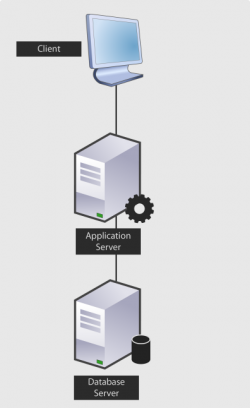

Overview
ProcessMaker is a flexible web-based application whose use is designed to accommodate both small-scale implementations for a single department and large-scale deployments for organizations with thousands of users. Large-scale deployments, however, require careful planning and an adequate setup to accommodate the processing, bandwidth and storage needs of the system.
General Guidelines for Server Sizing
The key to any sizing projects is to determine and understand some guidelines and types of workloads involved. Check the following statements which will allow you to evaluate accurately your system requirements:
Process Capability and Memory
- Number of estimated cases to be created per day. It's important to have an estimated number because this will affect the performance of your ProcessMaker installation.
- Consider the total number of nominal users which are expected to be using ProcessMaker.
- Complexity of templates, applications and components. So consider the number and size of documents which will be generated to also consider the disk space that should be allotted.
- The amount and the speed of the RAM on the server is more important than its processor. Large scale deployments will hit the RAM limits faster than the CPU limits.
Network Speed
- Network Latency
- Ensure that your router and Internet bandwidth supports your expected incoming and outgoing traffic.
I/O performance
- With large-scale deployments, it is always better to use multiple application servers and a separate database server.
Calculating Hardware Requirements
The sections below provide guidance on how to calculate hardware requirements, taking various considerations into account. The selection criteria used for each level may vary according to the needs of each company. Following a brief explanation of each level will be explained, so read them carefully to analyze and apply the level which will correspond to your System Requirements.
Each level was divided in priorities, from Low priority, in which companies with little data volume and users will apply to High priority for companies with large volumes of data. Those priorities should be considered according to the number of cases, it means that a priority will be applied according to the number of cases and nominal users.
How do users know which level must be applied
For example, consider having 200 users of which 120 of them will initiate cases and generate 200 Kb of documents for each case. In a month the total will be:
- Cases created: 3600
- Total Weight (generated documents) expressed in MB: 23.4
According to levels, explained below, this example will be considered to be on a Level 1, with High Priority. Planning in a future, first analyze if business will have an exponential growth, to consider a Level 2, with Medium priority, only if users exceed in number (more than 500 users) and do not exceed the 1000 users. If the company plans to grow over 1000 users, consider applying level 3, and so.
Similarly, the growth rate depends on each company planning, if it will consider a monthly or annual growth.
Level 1: Small Business
| Hardware Levels | Representative graphic | |||||
|---|---|---|---|---|---|---|
| LEVEL 1 | ProcessMaker + Apache + Mysql in the same Server |  | ||||
| Sizing Criteria | ||||||
| Workload (New cases per day) | 0 - 200 | |||||
| Nominal Users | 2 - 500 | |||||
| Application Space Requirement | 1GB - 100GB | |||||
| RAM | CPU Cores (2.6 GHz - 3GHz) | |||||
| Low | 4GB | 2 | ||||
| Medium | 12 GB | 2 | ||||
| High | 24 GB | 4+ | ||||
Example:
For organizations which expect to have roughly 2-500 users and generate approximately 150 new cases daily, we recommend the following minimum configuration:
- Server #1: ProcessMaker/Apache/MySQL: (Processor Dual Core 2.6 GHz - 3GHz) with 12 GB of RAM.
On this example, numbers will vary according to the Enterprise size and documents generated.
Level 2: Medium Sized Business
Use the following chart as a reference to check if the Sizing Criteria apply to your Enterprise. Note the graphic should be taken also as a reference, because according to the implementation of each company it will be vary:
| Hardware Levels | Representative graphic | |||||
|---|---|---|---|---|---|---|
| LEVEL 2 | One Server for ProcessMaker/Apache and another Server for Mysql |  | ||||
| Sizing Criteria | ||||||
| Workload (New cases per day) | 200-1000 | |||||
| Nominal Users | 500-2000 | |||||
| Application Space Requirement | 100GB - 500GB | |||||
| RAM | CPU Cores (2.6 GHz - 3GHz) | |||||
| Low | Apache 4GB | 4 | ||||
| MYSQL 4GB | 4 | |||||
| Medium | Apache 8GB | 8 | ||||
| MYSQL 8GB | 8 | |||||
| High | Apache 16GB | 16 | ||||
| MYSQL 32GB | 16 | |||||
Example:
For organizations planning on supporting approximately 1,000 nominal users and expecting to run more than 200 cases but less than 1,000 cases daily, we recommend the following minimum configuration:
- Server #1: ProcessMaker/Apache: (Processor Core 2.6 GHz - 3GHz) with 16 GB of RAM
- Server #2: MySQL: (Processor Core 2.6 GHz - 3GHz) with 32GB of RAM
- Server #3 (Optional): Hot Standby ProcessMaker/Apache: (Processor Core 2.6 GHz - 3GHz) with 16 GB of RAM
On this example, disk space was not considered because it will depend on the amount of documents generated on each case.
This configuration also adds a higher level of security than our Level 1 Configuration. It gives the company protection by having a hot standby ProcessMaker server and it also provides for a separate database server which can be placed behind the firewall and will be easier to maintain and much more secure from the standpoint of IT Security.
If you plan on adding more than 1,000 users or more than 800 cases daily, then you should consider our suggestion for a level 3 configuration with 3 servers: 1) ProcessMaker/Apache, 2) MySQL, and 3) Enterprise Search Server with Solr.
Level 3: Enterprise
Use the following chart as a reference to check if the Sizing Criteria apply to your Enterprise. Note the graphic should be taken also as a reference, because according to the implementation of each company it will be vary:
| Hardware Levels | Representative graphic | |||||
|---|---|---|---|---|---|---|
| LEVEL 3 | Solr Enterprise Server Apache server + Mysql Server + Solr server | 
| ||||
| Workload (Newly created cases per day) | 1,000 - 4,000 | |||||
| Nominal Users | 2,000 - 4,000 | |||||
| Application Space Requirement | 500GB - 5T | |||||
| RAM | CPU Cores (2.6 GHz - 3GHz) | |||||
| Low | Apache 8GB | 4 | ||||
| MySql 8GB | 4 | |||||
| Solr 8GB | 4 | |||||
| Medium | Apache 16GB | 8 | ||||
| MySql 32GB | 12 | |||||
| Solr 16GB | 8 | |||||
| High | Apache 32GB | 12 | ||||
| MySql 64GB | 24 | |||||
| Solr 32GB | 12 | |||||
For an organization which is planning to support roughly 1,000-4,000 users with approximately 4,000 new cases daily, we recommend the following configuration:
- Server #1: ProcessMaker/Apache: (Core 2.6 GHz - 3GHz) with 32 GB of RAM.
- Server #2: Hot Standby ProcessMaker/Apache: (Core 2.6 GHz - 3GHz) with 32 GB of RAM.
- Server #3: MySQL: (Core 2.6 GHz - 3GHz) with 64GB of RAM.
- Server #4: Solr Search: (Core 2.6 GHz - 3GHz) 32GB of RAM.
On this example, disk space was not considered because it will depend on the amount of documents generated on each case.
Note: Check this documentation to learn more about Solr Implementation.
Level 4: Large Enterprise
An organization which plans on having more than 4,000 nominal users, plans to generate more than 4,000 new cases daily, or plans to have significant amounts of database queries will need to consider implementing a more robust infrastructure. For example, financial institutions that handle large volumes of data should consider this level of configuration.
| Hardware Level | ||
|---|---|---|
| LEVEL 4 | PM Load balancing + DB Clustering + Solr Clustering | |
| To be defined in a consultancy and exhaustive analysis | ||
In this case we recommend load balanced application servers to help distribute workload across multiple servers or a server cluster, network links, central processing units, disk drives, or other resources. This will ensure optimal resource utilization, maximize throughput, minimize response time, and avoid overload. However, if this level needs to be applied, it should be defined during a consulting engagement with a qualified ProcessMaker Configuration expert which will include exhaustive analysis before implementation.
Note: Check this documentation to learn more about Solr Implementation.
Additional notes
For large-scale deployments we recommend using ProcessMaker's Enterprise Edition, since it has been optimized to handle larger numbers of cases. When a system is generating in excess of 5,000 new cases daily, accessing the list of cases under the CASES menu will become noticeably slower in the Community Edition. The Enterprise Edition has optimized its database queries to provide quicker access to the list of cases in a user's inbox.
If planning on using Pentaho Reporting in ProcessMaker's Enterprise Edition, we recommend that you install Pentaho on a separate server from ProcessMaker. Pentaho is a Java application which uses a great deal of system resources, so check its recommended system requirements (in section 4.3 Recommended Hardware) before installing Pentaho.